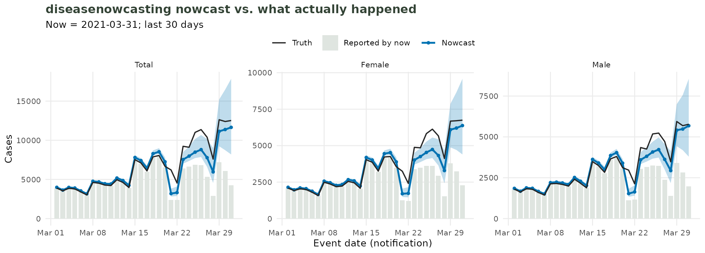
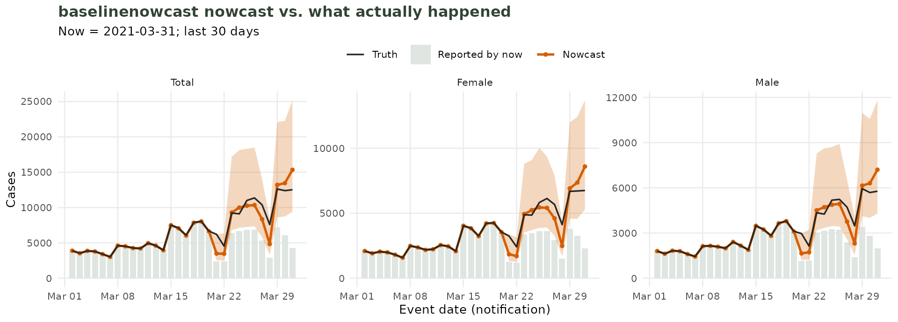
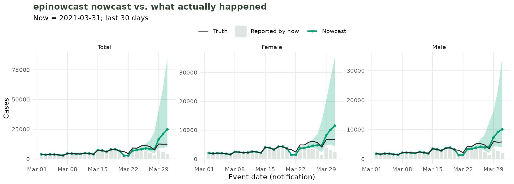
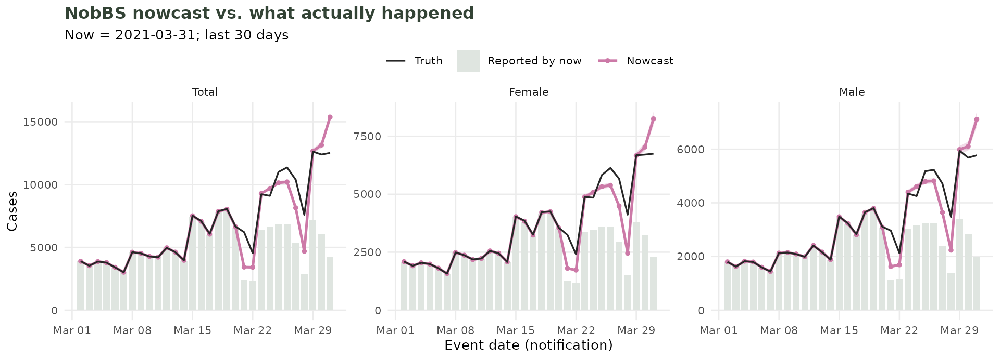
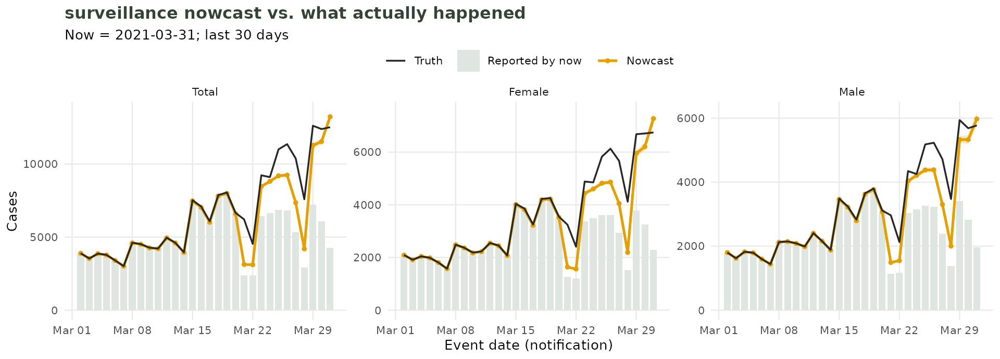
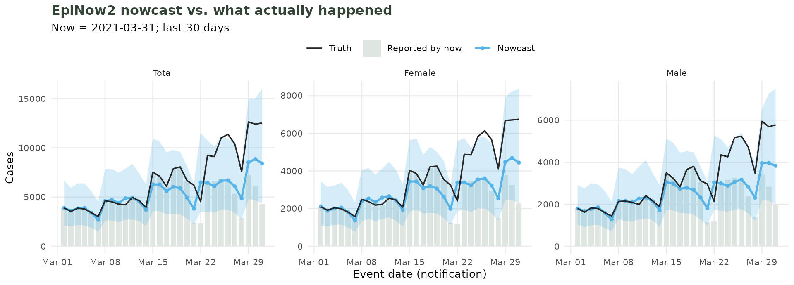
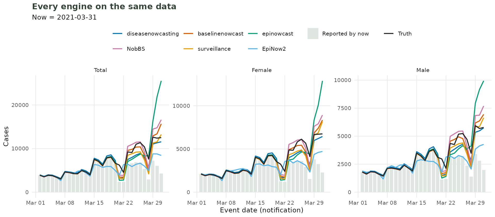

One dataset, many nowcasts: using tbl.now with different modelling packages
nowcasting-models.RmdWhy this vignette?
Preparing the same data different ways for the different nowcasting
models can be tedious and error-prone. This is exactly what tbl.now
helps with. You can describe your data once by specifying which column
is the event date, which is the report date, whether your data is
linelist or has counts (and what those counts mean!) and
tbl.now will hand it to each modelling package in the
format that package expects.
In this vignette we take a single dataset (
covid_colombia), and from that one object, use several different nowcasting / delay-estimation tools:
| Package | What it does | Additional requirements |
tbl.now converter |
run_nowcast() method |
|---|---|---|---|---|
| diseasenowcasting | flexible Bayesian nowcast (delay + epidemic processes) | none (uses RTMB) |
consumes a tbl_now directly
|
"diseasenowcasting" |
| baselinenowcast | fast, assumption-light baseline nowcast | none | tbl_now_to_baselinenowcast() |
"baselinenowcast" |
| epinowcast | flexible Bayesian nowcast (delay + reference modules) | Stan | tbl_now_to_epinowcast() |
"epinowcast" |
| epidist | estimates only the reporting delay distribution | Stan | tbl_now_to_epidist() |
— (not a nowcast) |
| NobBS | Nowcasting by Bayesian Smoothing | JAGS | tbl_now_to_nobbs() |
"NobBS" |
| surveillance | the classic Höhle & an der Heiden nowcast | none for the method used here (JAGS for
bayes.trunc.ddcp) |
tbl_now_to_surveillance() |
"surveillance" |
| EpiNow2 | renewal-equation R_t, reporting truncation, and delay distributions |
Stan (cmdstanr) |
tbl_now_to_EpiNow2() |
"EpiNow2" |
You do not need to be an expert in any of them to follow along, the point is to show how little changes on your side when you switch models.
This article shows how to use each package “by hand”: convert, fit,
and evaluate with tidy(). The tbl.now package
also contains the experimental run_nowcast() function which
allow you to do the same three steps in one call. See the companion
article: One call, many
models to see how to use the run_nowcast
function for any of the aforementioned methods and generate ensemble
nowcasts.
Note This article aims only to show how to use each package for nowcasting. We are purposefully not using the optimal models from each package for this particular dataset. Our goal is just to show how one uses them. Please DO NOT CONCLUDE WHICH PACKAGE IS BEST BASED ON THE RESULTS FROM THIS TUTORIAL.
Each of these is a separate package, and tbl.now
does not install any of them. It only knows how to
talk to them. Install whichever you actually want to use. Note
that some also need software outside R (the Additional
requirements column above) like Stan or
JAGS.
# CRAN packges
install.packages(c("baselinenowcast", "EpiNow2", "NobBS", "surveillance"))
# Not on CRAN:
install.packages("cmdstanr", repos = c('https://stan-dev.r-universe.dev', getOption("repos")))
install.packages("epidist", repos = "https://epinowcast.r-universe.dev")
install.packages("epinowcast", repos = "https://epinowcast.r-universe.dev")
# Packages from Github:
install.packages("pak")
pak::pkg_install("RodrigoZepeda/diseasenowcasting")The data
tbl.now ships with covid_colombia, daily
COVID-19 case counts from Colombia’s national surveillance system (INS)
from 2020 to 2023. Each row is a
(notification_date, diagnosis_date, sex) combination with a
case count n. It includes notification date as the date the
case was first notified (event_date), and the date the
laboratory diagnosis was registered (report_date). The gap
between the two is the reporting delay. OUR GOAL IS TO NOWCAST
THE CASES AS THEY HAPPEN ACCORDING TO
notification_date.
#> notification_date diagnosis_date sex n
#> 1 2020-03-02 2020-03-06 Female 1
#> 2 2020-03-03 2020-03-14 Female 1
#> 3 2020-03-06 2020-03-09 Male 1
#> 4 2020-03-07 2020-03-09 Female 1
#> 5 2020-03-08 2020-03-11 Female 2
#> 6 2020-03-09 2020-03-11 Female 1We will build a single tbl_now. To do so, we state which
column is the event date (notification_date), which is the
report date (diagnosis_date), and which the counts
(n); tbl.now infers the rest — that the grid
is daily, and that the “now” is the last report date.
For this example we will cut both dates at the start
of April 2021 (Colombia’s third wave). The example will assume we are
back on that date, with only the information available until then
(now = "2021-04-01"). No data observed after that date is
kept:
cutoff <- as.Date("2021-04-01")
#Filter to simulate being back on April 2021
covid <- covid_colombia |>
filter(notification_date < cutoff, diagnosis_date < cutoff)
#Create the tbl_now object
covid_now <- covid |>
tbl_now(
event_date = notification_date,
report_date = diagnosis_date,
case_count = n,
data_type = "count-incidence"
)
#> Warning: *Non-unique*: 8066 rows share an (notification_date, diagnosis_date)
#> combination.
#> ℹ 1 column "sex" is not declared, so it splits each cell into several rows.
#> Declare it with `strata = ` to model it separately, or `to_count()` to pool
#> it away. The `tbl_now_to_()` converters pool undeclared columns for you, so
#> this is a warning rather than an error.
#We can see the tbl_now
covid_now
#> # A tibble: 18,195 × 7
#> # Data type: "count-incidence"
#> # Frequency: Event: `days` | Report: `days`
#> notification_date diagnosis_date sex n .event_num .report_num .delay
#> <date> <date> <chr> <int> <dbl> <dbl> <dbl>
#> [event_date] [report_date] [...] [cases] [...] [...] [...]
#> 1 2020-03-02 2020-03-06 Female 1 0 4 4
#> 2 2020-03-03 2020-03-14 Female 1 1 12 11
#> 3 2020-03-06 2020-03-09 Male 1 4 7 3
#> 4 2020-03-07 2020-03-09 Female 1 5 7 2
#> 5 2020-03-08 2020-03-11 Female 2 6 9 3
#> 6 2020-03-09 2020-03-11 Female 1 7 9 2
#> 7 2020-03-09 2020-03-11 Male 2 7 9 2
#> 8 2020-03-10 2020-03-11 Female 1 8 9 1
#> 9 2020-03-10 2020-03-12 Female 2 8 10 2
#> 10 2020-03-10 2020-03-13 Male 1 8 11 3
#> # ────────────────────────────────────────────────────────────────────────────────
#> # Now: 2021-03-31 | Event date: "notification_date" | Report date:
#> # "diagnosis_date"
#> # ────────────────────────────────────────────────────────────────────────────────
#> # ℹ 18,185 more rowsAbout the warning. sex is in the data
but was not declared as a covariate or strata, so each
(notification_date, diagnosis_date) cell has two rows (one
per sex). You can ignore the warning. The object will
be valid, and every tbl_now_to_*() converter pools
undeclared columns for you, so this article’s pooled fits are one series
summed over sex, exactly as intended.
That is 2,345,446 cases over 393 days, from March 2020 to 2021-03-31. Everything in this article — every fit, every figure — is built from this dataset.
A more complex object: strata and temporal effects
Reporting delays are rarely constant and many series are reported for
several strata (here, sex) that you may
want to nowcast separately. Here we build a second object,
covid_seasonal, that declares sex as a stratum
and adds day-of-week plus annual-Fourier temporal (delay)
effects. We show how one would use them after converting to
each package’s format:
covid_seasonal <- covid_now |>
add_strata(sex) |>
add_temporal_effects(
temporal_effects(
day_of_week = TRUE, # a separate level per weekday
seasons = 365 # an annual Fourier cycle (period = 365 days)
)
)A note on series length. This dataset carries 2.3M cases, and what that costs depends entirely on whether a package counts rows or reads counts:
-
diseasenowcastingtakes the whole series untrimmed. Nothing is dropped. -
baselinenowcastalso keeps every day, but the delays are capped withmax_delay = 30. That is a modelling assumption, not a workaround: the long tail carries under 1% of cases, and one 185-day straggler otherwise gives the triangle 186 columns instead of 30. - The remaining packages (
NobBS,surveillance,epinowcastandepidist) are trimmed before converting as the time they take to run the models is prohibitively expensive.
diseasenowcasting
diseasenowcasting
is designed hand-in-hand with tbl.now, so it takes a
tbl_now directly. You just hand it the
object:
Simple nowcast
# TODO: When the diseasenowcasting 2.3.0 ships without the tidy()
# remove the :: and use library
dnc_fit <- diseasenowcasting::nowcast(covid_now)
dnc_fit#> -- diseasenowcasting --------------------------------------- as of 2021-03-31 --
#> Model: NegBin / HSGP / LogNormal
#> two_stage (395 event-times; 25 fits, rung 'multi')
#> Use `predict()` / `autoplot()` for the nowcast, `coef()` / `summary()` for
#> estimates.
#> Call `print(nc@model)` for the full model spec (including priors).Predictions can be obtained via tidy:
tidy(dnc_fit)#> # A tibble: 5 × 7
#> event_date stratum estimate conf.low conf.high level engine
#> <date> <chr> <dbl> <dbl> <dbl> <dbl> <chr>
#> 1 2021-03-27 all 7776. 6622. 10227 0.95 diseasenowcasting
#> 2 2021-03-28 all 6063 4559. 9235. 0.95 diseasenowcasting
#> 3 2021-03-29 all 11174 9264 15192. 0.95 diseasenowcasting
#> 4 2021-03-30 all 11379 8825. 16477. 0.95 diseasenowcasting
#> 5 2021-03-31 all 11588. 8158. 18478. 0.95 diseasenowcastingWith strata and effects.
diseasenowcasting reaches into the tbl_now
itself, so the enriched object needs no extra arguments: it picks up the
sex stratum and the day-of-week / seasonal effect columns
automatically.
dnc_seasonal <- diseasenowcasting::nowcast(covid_seasonal) # strata and effects used automatically#> -- diseasenowcasting --------------------------------------- as of 2021-03-31 --
#> Model: NegBin / HSGP / LogNormal
#> two_stage (395 event-times, 2 strata; 25 fits, rung 'multi')
#> Use `predict()` / `autoplot()` for the nowcast, `coef()` / `summary()` for
#> estimates.
#> Call `print(nc@model)` for the full model spec (including priors).tidy() can also be used in stratified cases:
tidy(dnc_seasonal)#> # A tibble: 5 × 7
#> event_date stratum estimate conf.low conf.high level engine
#> <date> <chr> <dbl> <dbl> <dbl> <dbl> <chr>
#> 1 2021-03-27 Male 3594 2992. 4556. 0.95 diseasenowcasting
#> 2 2021-03-28 Male 2926 2159. 4218. 0.95 diseasenowcasting
#> 3 2021-03-29 Male 5424. 4392. 6998. 0.95 diseasenowcasting
#> 4 2021-03-30 Male 5460. 4150. 7394. 0.95 diseasenowcasting
#> 5 2021-03-31 Male 5720. 3748. 8310. 0.95 diseasenowcasting
Nowcast both stratified and total using the diseasenowcasting package
baselinenowcast
baselinenowcast
is a simple, fast baseline. It works from a reporting
triangle, a matrix with one row per event (reference) date and
one column per reporting delay. The lower-right corner of the matrix
corresponds to the not-yet-observed part the nowcast will fill in.
tbl_now_to_baselinenowcast() builds that triangle
directly from the count-incidence data:
Simple nowcast
library(baselinenowcast)
# Cap the delay axis: a single 185-day straggler gives the
# triangle 186 columns, almost all of them empty.
covid_triangle <- covid_now |>
tbl_now_to_baselinenowcast(max_delay = 30, verbose = FALSE)
# rows = notification dates, columns = delay in days
covid_triangle[1:5, 1:6]
#> 0 1 2 3 4 5
#> 2020-03-02 0 0 0 0 1 0
#> 2020-03-03 0 0 0 0 0 0
#> 2020-03-06 0 0 0 1 0 0
#> 2020-03-07 0 0 1 0 0 0
#> 2020-03-08 0 0 0 2 0 0Why cap the delays? The reporting triangle keeps every one of the 393 event dates. This makes the fit very slow for a tail that carries well under 1% of cases.
From here you can follow baselinenowcast’s own workflow.
For example calling baselinenowcast() to estimate the delay
from the triangle, apply it, and draw nowcast samples:
# One-call workflow: estimate the delay, apply it, and draw nowcast samples.
nowcast_samples <- baselinenowcast(
covid_triangle,
output_type = "samples",
draws = 1000
)With strata and effects.
To nowcast each stratum we need to specify a
format = "triangle_list". This creates one
reporting-triangle per stratum and returns them as a list.
# One reporting triangle per stratum, straight from the object.
triangles_by_stratum <- tbl_now_to_baselinenowcast(
covid_seasonal,
max_delay = 30,
format = "triangle_list",
verbose = FALSE
)
triangles_by_stratum
#> ── 2 reporting triangles from a <tbl_now> ──────────────────────────────────────
#> • One per stratum ("sex"): "Female" and "Male"
#> • Delays unit: "days"
#> • Now: "2021-03-31"
#> • Dimensions (event x delay): "392 x 30" and "389 x 30"
#> ℹ This is one triangle per STRATUM. `baselinenowcast::estimate_and_apply_delays()` expects retrospective snapshots of a single series instead -- do not pass this object to it.This can be used to nowcast each stratum via lapply:
# One nowcast per triangle, each trimmed the same way.
nowcasts_by_stratum <- triangles_by_stratum |>
lapply(\(tri) baselinenowcast(tri, output_type = "samples", draws = 1000))In both stratified and unstratified cases the predictions can be
recovered with tidy:
tidy(nowcast_samples)#> # A tibble: 5 × 7
#> event_date stratum estimate conf.low conf.high level engine
#> <date> <chr> <dbl> <dbl> <dbl> <dbl> <chr>
#> 1 2021-03-27 all 8354. 5832. 14026. 0.95 baselinenowcast
#> 2 2021-03-28 all 4828. 3293. 8462. 0.95 baselinenowcast
#> 3 2021-03-29 all 13206. 8620. 22098. 0.95 baselinenowcast
#> 4 2021-03-30 all 13457 8732. 22262. 0.95 baselinenowcast
#> 5 2021-03-31 all 15340. 9399 25179. 0.95 baselinenowcast
Nowcast both stratified and total using the baselinenowcast package
epinowcast
epinowcast
fits a flexible Bayesian model with separate modules for the reporting
delay and the reference (epidemic) process. It expects a preprocessed
object built by enw_preprocess_data().
tbl_now_to_epinowcast() handles the preprocessing,
returning an object you can pass straight to
epinowcast::epinowcast():
Warning: requires Stan. This package fits its model
with Stan, so it needs a working cmdstanr
(or rstan) toolchain installed before any of the code below
will run.
Simple nowcast
epinowcast becomes very slow with the 2.3M cases
reporting triangle. So we need to filter earlier, on the
observations before applying
tbl_now_to_epinowcast().
library(epinowcast)
# Trim, then convert. 90 days, not two years: this fit scales with the number of
# REFERENCE dates, and it is the slowest engine on the page.
covid_enw_recent <- covid_now |>
filter(notification_date >= cutoff - 90) |>
tbl_now_to_epinowcast(max_delay = 30, verbose = FALSE, quiet = TRUE)
covid_enw_recent
#> ── Preprocessed nowcast data ───────────────────────────────────────────────────
#> Groups: 1 | Timestep: day | Max delay: 30
#> Observations: 90 timepoints x 90 snapshots
#> Max date: 2021-03-31
#>
#> Datasets (access with `enw_get_data(x, "<name>")`):
#> obs : 2,265 x 7
#> new_confirm : 2,265 x 9
#> latest : 90 x 8
#> missing_reference : 0 x 4
#> reporting_triangle : 90 x 32
#> metareference : 90 x 7
#> metareport : 119 x 10
#> metadelay : 30 x 5This can then be passed to epinowcast():
# A minimal epinowcast fit from the preprocessed object
enw_fit <- epinowcast(
covid_enw_recent,
fit = enw_fit_opts(
pp = TRUE, chains = 2, iter_sampling = 250, iter_warmup = 250,
seed = 20260824
)
)Again, the max_delay is a modelling choice, not
a detail: left unset, the converter infers it from the longest
delay present (330 days here), and the nowcast then carries one
reference date per delay. This also becomes extremely slow.
With strata and effects.
Handing tbl_now_to_epinowcast() the enriched object does
two things automatically: the sex stratum becomes
epinowcast’s grouping (by), so the model fits a delay per
sex, and the temporal-effect columns land in the
metareference / metareport tables so that they
can be used in a module formula.
# Same trim, from the enriched object.
enw_seasonal <- covid_seasonal |>
filter(notification_date >= cutoff - 90) |>
tbl_now_to_epinowcast(max_delay = 30, verbose = FALSE, quiet = TRUE)
# Drop a temporal effect into a reference-module formula and fit as usual: the
# covariate now enters the reference model. The columns carry the same names as
# in `covid_seasonal` after `compute_temporal_effects()`.
#
# DAY OF WEEK, not the annual Fourier pair. `covid_seasonal` declares both, but
# a 365-day cycle observed over a 90-day window is a quarter of one period and
# is barely identified -- and a weakly identified parameter is what makes a
# sampler crawl. Measured on this data: the Fourier version took 1,424s, and at
# a 60-day window it finished faster but with 250 divergent transitions. Day of
# week is fully identified here, fits in 219s, and diverges not at all.
enw_seasonal_fit <- epinowcast(
enw_seasonal,
reference = enw_reference(
parametric = ~ 1 + .event_day_of_week,
distribution = "lognormal",
data = enw_seasonal
),
fit = enw_fit_opts(
pp = TRUE, chains = 2, iter_sampling = 250, iter_warmup = 250,
seed = 20260824
)
)Pick an effect the window can actually identify. The
point of this section is how a temporal effect reaches the
reference module, not what it says about COVID-19 in Colombia — but the
choice of effect is not free. covid_seasonal carries both a
day-of-week effect and an annual Fourier pair, and only the first is
estimable from ninety days of data: one period of the second has not
even finished. Asking for the Fourier terms anyway does not error, it
just samples badly — 1,424s here, and 250 divergent transitions when the
window was shortened further. Day of week costs 219s and diverges not at
all.
These fits are deliberately small. Two chains, 250 warmup and 250 sampling iterations on a short window, because this page is about how to drive the engine and rebuilds on every change. Raise them when the numbers matter.
enw_pathfinder() looks like the obvious speed-up and is
not an option here: on this data its optimiser cannot
start
(Line search failed to achieve a sufficient decrease),
every iteration fails, and the fit returns no draws at all. It works for
other models – EpiNow2 uses it in
vignette("ensemble-nowcasting") – but not for this one.
In both stratified and unstratified cases the predictions can be
recovered with tidy:
tidy(enw_fit)#> # A tibble: 5 × 7
#> event_date stratum estimate conf.low conf.high level engine
#> <date> <chr> <dbl> <dbl> <dbl> <dbl> <chr>
#> 1 2021-03-27 all 8265 6252. 15765. 0.9 epinowcast
#> 2 2021-03-28 all 8253 4391. 22588. 0.9 epinowcast
#> 3 2021-03-29 all 16610. 9451. 41504. 0.9 epinowcast
#> 4 2021-03-30 all 21104. 9522. 60072. 0.9 epinowcast
#> 5 2021-03-31 all 24920. 9987. 85524. 0.9 epinowcast
Nowcast both stratified and total using the epinowcast package
NobBS
NobBS
works from a linelist with an onset-date column and a
report-date column, and it counts rows. Each row is one
case. Our data are counts, so they have to be expanded first.
tbl_now_to_nobbs() does that and names the columns what
NobBS() expects:
Warning: requires JAGS. This package fits its model with JAGS, which is a separate program: install JAGS itself, not just the R package, before running the code below.
Simple nowcast
# Trim BEFORE converting: the expansion is one row per case, and `moving_window`
# below limits only what NobBS fits, not what it is handed.
covid_linelist <- covid_now |>
filter(notification_date >= cutoff - 60) |>
tbl_now_to_nobbs(verbose = FALSE)
#> Warning: `tbl_now_to_nobbs()` needs a line list; expanding "count-incidence" counts in
#> "n" to one row per case.
nrow(covid_linelist) # one row per case
#> [1] 271888Do not hand NobBS() count data
directly. It counts rows, so a table of 1,174 rows carrying
50,160 cases is nowcast as 1,174 cases!. The converter
exists to make that impossible.
library(NobBS)
nobbs_fit <- NobBS(
data = covid_linelist,
now = get_now(covid_now),
units = "1 day",
onset_date = "onset_date",
report_date = "report_date",
max_D = 30, # delays beyond 30 days are negligible here
moving_window = 60 # ...and fit the last 60 days, which is all we handed it
)The predictions come out with tidy(), in the same shape
as every other engine here:
tidy(nobbs_fit)#> # A tibble: 5 × 7
#> event_date stratum estimate conf.low conf.high level engine
#> <date> <chr> <dbl> <dbl> <dbl> <dbl> <chr>
#> 1 2021-03-27 all 8149 8018 8286 NA NobBS
#> 2 2021-03-28 all 4684 4578 4794 NA NobBS
#> 3 2021-03-29 all 12668 12465 12878 NA NobBS
#> 4 2021-03-30 all 13150 12901 13407 NA NobBS
#> 5 2021-03-31 all 15376 14959 15794. NA NobBSNotice that even the arguments come from the tbl_now:
get_now(), get_event_date() and
get_report_date() tell NobBS what
tbl.now already figured out.
With strata and effects.
NobBS.strat() fits one nowcast per stratum, and its
strata argument names one column.
tbl_now_to_nobbs() therefore adds a strata
column holding every declared stratum pasted together under the name
strata. Use "strata" as the name for
NobBS.strat:
covid_linelist_sex <- covid_seasonal |>
filter(notification_date >= cutoff - 60) |>
tbl_now_to_nobbs(verbose = FALSE) # `sex` rides along, plus a `strata` column
stratified_nobbs <- NobBS.strat(covid_linelist_sex,
strata = "strata",
now = get_now(covid_seasonal),
units = "1 day",
onset_date = "onset_date",
report_date = "report_date",
max_D = 30,
moving_window = 60
)In both stratified and unstratified cases the predictions can be
recovered with tidy:

Nowcast both stratified and total using the NobBS package
There is a credible interval in that figure — it is just too
narrow to see. Every panel in this article draws the engine’s
interval as a shaded band, and NobBS does return one. The
tidy() table above gives 15,376 [14,959,
15,794] for 2021-03-31 — a band 5.4% of the estimate wide, and
that is its widest day. Across the thirty days plotted the
median width is 0.6%, which is thinner than the line
drawn on top of it.
Nothing was lost in translation — the model is simply that confident.
At roughly ten thousand cases a day a Poisson-like posterior puts its
interval near \pm\sqrt{n}, and
NobBS estimates the delay distribution from a great deal of
data. Read these bounds off tidy(), not off the
figure, and compare them with epinowcast above and
EpiNow2 below, whose delay carries far more uncertainty and
whose bands show it.
surveillance
surveillance
is the long-standing R package for outbreak detection and nowcasting,
and implements the Höhle & an der Heiden (2014) approach.
surveillance::nowcast() works from an individual-level
line list with one column for the event date and one
for the report date, named by its dEventCol /
dReportCol arguments.
tbl_now_to_surveillance() builds that data frame and
renames the two dates to surveillance’s own defaults:
Simple nowcast
library(surveillance)
# Trim before converting: the converter expands counts to one row per case.
covid_sur_now <- covid_now |>
filter(notification_date >= cutoff - 60)
covid_sur <- tbl_now_to_surveillance(covid_sur_now, verbose = FALSE)
#> Warning: `tbl_now_to_surveillance()` needs a line list; expanding "count-incidence"
#> counts in "n" to one row per case.
head(covid_sur)
#> dHospital dReport
#> 1 2021-01-31 2021-01-31
#> 2 2021-01-31 2021-01-31
#> 3 2021-01-31 2021-01-31
#> 4 2021-01-31 2021-01-31
#> 5 2021-01-31 2021-01-31
#> 6 2021-01-31 2021-01-31surveillance::nowcast() requires you to pass two date
grids. Use get_surveillance_when() to get
the dates you want estimated, and get_surveillance_range()
for the whole axis the model is laid on. The nowcast itself needs a
now, the dates you want estimated (when), and
a maximum delay D. All of it can come from the
tbl_now:
#Note that in the call we use our get_now(), get_surveillance_when()
#and get_surveillance_range() functions to get those variables from the
#tbl.now
sur_fit <- nowcast(
now = get_now(covid_sur_now),
when = get_surveillance_when(covid_sur_now, length = 30),
data = covid_sur,
dEventCol = "dHospital",
dReportCol = "dReport",
aggregate.by = "1 day",
D = 30,
method = "bayes.notrunc.bnb",
control = list(dRange = get_surveillance_range(covid_sur_now),
N.tInf.max = 100000, nSamples = 1000)
)The predictions come out with tidy(), in the same shape
as every other engine here:
tidy(sur_fit)#> # A tibble: 5 × 7
#> event_date stratum estimate conf.low conf.high level engine
#> <date> <chr> <dbl> <dbl> <dbl> <dbl> <chr>
#> 1 2021-03-27 all 7355 7251 7462 0.95 surveillance
#> 2 2021-03-28 all 4197 4113 4284 0.95 surveillance
#> 3 2021-03-29 all 11283 11125 11445 0.95 surveillance
#> 4 2021-03-30 all 11540 11337 11746 0.95 surveillance
#> 5 2021-03-31 all 13236 12905 13575 0.95 surveillanceWith strata and effects.
surveillance::nowcast() has no strata
argument as it only models one series, so a stratified analysis
means one fit per stratum. Ask the converter for
format = "linelist_list" and it does the splitting, exactly
as format = "triangle_list" does for
baselinenowcast: one line list per stratum, in a plain list
you can lapply() over.
# Trim first, exactly as above: the whole window is 2.3M cases and the converter
# expands every one of them to a row.
covid_sur_seasonal <- covid_seasonal |>
filter(notification_date >= cutoff - 60)
covid_sur_eff <- tbl_now_to_surveillance(
covid_sur_seasonal,
format = "linelist_list",
verbose = FALSE
)
covid_sur_eff
#> ── 2 surveillance line lists from a <tbl_now> ──────────────────────────────────
#> • One per stratum ("sex"): "Female" and "Male"
#> • Date columns: "dHospital" (event), "dReport" (report)
#> • Rows each: 144514 and 127374
#> • Now: "2021-03-31"
#> ℹ `lapply()` over this, passing `control$dRange = get_surveillance_range(x)` from the WHOLE object so every stratum shares one time axis.With no strata declared this is still a list, of length one named
"all", so the lapply() below does not have to
know which case it is in. The default format = "linelist"
gives the same information as one frame with a pasted
strata column, if you would rather split it yourself.
sur_by_stratum <- covid_sur_eff |>
lapply(\(df) nowcast(
now = get_now(covid_sur_seasonal),
when = get_surveillance_when(covid_sur_seasonal, length = 30),
data = df,
dEventCol = "dHospital",
dReportCol = "dReport",
aggregate.by = "1 day",
D = 30,
method = "bayes.notrunc.bnb",
control = list(
# The grid comes from the object, not from the piece: every stratum has to
# be laid on the SAME axis, or a stratum whose first case arrived late
# starts its own time at a different day.
dRange = get_surveillance_range(covid_sur_seasonal),
# `N.tInf.max` caps the support of the nowcast distribution, so it has to
# sit comfortably above the largest daily count in the stratum -- here
# about 4,000. Too low and the posterior is silently truncated.
N.tInf.max = 100000,
nSamples = 1000
)
))tidy() recognises the list and labels each block with
its own stratum, so sur_by_stratum tidies into one table
exactly like the natively stratified engines.
In both stratified and unstratified cases the predictions can be
recovered with tidy:

Nowcast both stratified and total using the surveillance package
As with NobBS, the prediction interval is drawn
but invisible. tidy() reads it from the
stsNC object’s pi slot at the width
control$alpha sets (95% by default), and for 2021-03-31 it
is 13,236 [12,905, 13,575] — 5.1% of the estimate,
against a median of 0.3% over the thirty days plotted. You do
not need the JAGS-backed bayes.trunc
methods to get uncertainty out of surveillance;
bayes.notrunc.bnb above reports it. (The
lawless and unif methods may leave the slot
empty, and then the bounds come back NA.)
EpiNow2
EpiNow2’s interface from tbl.now is still experimental
we haven’t checked it yet
EpiNow2
is the odd one out here: it is not a single nowcast model but
four entry points, each taking a different shape of
data. tbl_now_to_EpiNow2() therefore takes a
target argument, named for the function the result is
passed to, so whatever it gives you can be handed over unchanged.
Warning: requires Stan. These models fit through
cmdstanr, so a working CmdStan installation is needed
before running the code below.
target |
you get | for |
|---|---|---|
"estimate_infections" (default) |
date / confirm
|
estimate_infections(), epinow()
|
"regional_epinow" |
the same plus region
|
regional_epinow() |
"estimate_truncation" |
a list of snapshots | estimate_truncation() |
"estimate_dist" |
interval-censored date columns | estimate_dist() |
EpiNow2 models a daily process and has no
timestep. Handing it a weekly series as one row
per week is read as one row per day — no error, just an
epidemic seven times too fast. The converter lays non-daily data on
EpiNow2’s own daily grid using its accumulate column, so
you do not have to. Units coarser than a week are refused rather than
approximated.
Simple nowcast
estimate_infections() wants the series as known at the
now — one row per day, with the filler days marked:
covid_en2 <- covid_now |>
filter(notification_date >= cutoff - 60) |>
tbl_now_to_EpiNow2(verbose = FALSE, quiet = TRUE)
head(covid_en2)
#> date confirm
#> 1 2021-01-31 3854
#> 2 2021-02-01 6643
#> 3 2021-02-02 5358
#> 4 2021-02-03 5071
#> 5 2021-02-04 4742
#> 6 2021-02-05 4800EpiNow2 needs two things fitted before it can nowcast, and they are not the same thing:
-
delaysconvolves infections into reports. The infection-to-onset part of it is not in our data at all, so the incubation period stays EpiNow2’s shipped example. -
truncationis the right-truncation correction — the nowcast itself. That is what the report dimension of atbl_nowmeasures, andestimate_truncation()fits it from snapshots of the series as it looked at successive report dates. This is the one EpiNow2 model that uses the report axis, which is whytbl_now_to_EpiNow2()has a target for it.
Its default is trunc_opts() = Fixed(0):
no truncation, so no nowcast. So this is a two-step
fit.
library(EpiNow2)
# STEP 1 --- fit the truncation from the report dimension.
covid_snaps <- covid_now |>
filter(notification_date >= cutoff - 60) |>
tbl_now_to_EpiNow2(
target = "estimate_truncation", snapshots = 5, verbose = FALSE, quiet = TRUE
)
truncation_fit <- estimate_truncation(
covid_snaps,
# `stan_opts()` picks a RANDOM seed by default
# (`seed = as.integer(runif(1, 1e8))`), so an unseeded EpiNow2 fit cannot be
# reproduced -- and a pathological sample cannot be told apart from a bad
# model afterwards. Pin it, as the epinowcast section above does.
stan = stan_opts(samples = 500, warmup = 500, chains = 2, seed = 20260824)
)
# `$dist` is defunct; the accessor is `get_parameters()`.
fitted_truncation <- get_parameters(truncation_fit)[["truncation"]]
# STEP 2 --- nowcast with it.
epinow2_fit <- estimate_infections(
covid_en2,
generation_time = gt_opts(example_generation_time),
delays = delay_opts(example_incubation_period),
truncation = trunc_opts(fitted_truncation),
# A WEEKLY RANDOM WALK, and no Gaussian process. EpiNow2's default models
# R_t with a GP, which on this data is both slower and unstable: at the
# package defaults one stratum or the other came back nowcasting FEWER cases
# than had already been reported (a ratio of 0.42, where it must be at least
# 1). The random walk is EpiNow2's own documented alternative when speed
# matters, and here it is also the one that converges.
rt = rt_opts(prior = LogNormal(mean = 2, sd = 0.1), rw = 7),
gp = NULL,
stan = stan_opts(samples = 1000, warmup = 250, chains = 2,
seed = 20260824)
)Without step 1, EpiNow2 does not nowcast at all.
Given only a reporting delay — whether EpiNow2’s shipped UK one or one
fitted from these data with estimate_dist() — its median
stayed roughly flat over the last two weeks and sat below what
had already been reported. delays tells the model how
infections turn into reports; it does not tell it that the newest days
are incomplete. Only truncation does.
With it, over the last seven days — where these data are about 50% complete — the fit sits below the already-reported count on 4 of 21 stratum-days instead of most of them, and the last day is nowcast at 8,090 against 4,261 reported and 12,521 eventual.
It still dips below the observed value on about half of the older days, and that is not a nowcasting failure: those days are ~92% complete, and a model that fits a smooth infection curve will fall below a noisy daily count roughly half the time. That is EpiNow2 doing what it is for.
The generation time and incubation period are still EpiNow2’s shipped examples, and deliberately so: both are properties of transmission rather than of reporting, and no amount of reporting data identifies them. What the report dimension does identify is the truncation, and that is what step 1 fits. Sampling is also lighter than the default (1,000 draws, 250 warmup, 2 chains), and follows a weekly random walk rather than EpiNow2’s default Gaussian process. That is not only for speed. At the defaults this fit is unstable on these data: one stratum or the other comes back nowcasting fewer cases than had already been reported, which no nowcast can legitimately do. The random walk is EpiNow2’s own documented alternative when speed matters, and here it is also the one that converges — it was faster (229s against 381s) and both strata came out above their reported counts.
The predictions come out with tidy(), in the same shape
as every other engine here:
tidy(epinow2_fit)#> # A tibble: 5 × 7
#> event_date stratum estimate conf.low conf.high level engine
#> <date> <chr> <dbl> <dbl> <dbl> <dbl> <chr>
#> 1 2021-04-03 all 8676 3813. 21892. 0.9 EpiNow2
#> 2 2021-04-04 all 7296. 2811. 19838. 0.9 EpiNow2
#> 3 2021-04-05 all 12712 4700. 41552. 0.9 EpiNow2
#> 4 2021-04-06 all 13124. 4676. 43810. 0.9 EpiNow2
#> 5 2021-04-07 all 12500 3796. 50596. 0.9 EpiNow2tidy() reads the interval width off the fit rather than
assuming it: EpiNow2’s CrIs is a user argument, so a model
fitted with CrIs = c(0.5, 0.95) reports
level = 0.95 and one fitted with the defaults reports
level = 0.9.
The report dimension: estimate_truncation()
This is step 1 above, looked at on its own — the one EpiNow2 model
that uses the report dimension a tbl_now
exists to carry. It takes a list of snapshots — the series as it looked
at each of several report dates — which is exactly what the object
already knows:
covid_snapshots <- covid_now |>
filter(notification_date >= cutoff - 60) |>
tbl_now_to_EpiNow2(
target = "estimate_truncation", snapshots = 5,
verbose = FALSE, quiet = TRUE
)
covid_snapshots
#> ── 5 reporting snapshots from a <tbl_now> ──────────────────────────────────────
#> • One per report date: "2021-03-27", "2021-03-28", "2021-03-29", "2021-03-30", and "2021-03-31"
#> • Rows each: 56, 57, 58, 59, and 60
#> • Now: "2021-03-31"
#> ℹ Pass this to `EpiNow2::estimate_truncation()`. `EpiNow2::estimate_secondary()` wants a single data frame of linked series instead -- not this.Because the snapshots carry their report dates, this is the one
EpiNow2 shape that can be turned back into a
tbl_now — differencing consecutive snapshots recovers the
incidence:
as_tbl_now(covid_snapshots)
#> # A tibble: 169 × 6
#> # Data type: "count-incidence"
#> # Frequency: Event: `days` | Report: `days`
#> notification_date diagnosis_date count .event_num .report_num .delay
#> <date> <date> <dbl> <dbl> <dbl> <dbl>
#> [event_date] [report_date] [cases] [...] [...] [...]
#> 1 2021-01-31 2021-03-27 3854 0 55 55
#> 2 2021-02-01 2021-03-27 6643 1 55 54
#> 3 2021-02-02 2021-03-27 5358 2 55 53
#> 4 2021-02-03 2021-03-27 5071 3 55 52
#> 5 2021-02-04 2021-03-27 4742 4 55 51
#> 6 2021-02-05 2021-03-27 4800 5 55 50
#> 7 2021-02-06 2021-03-27 4170 6 55 49
#> 8 2021-02-07 2021-03-27 3101 7 55 48
#> 9 2021-02-08 2021-03-27 5040 8 55 47
#> 10 2021-02-09 2021-03-27 4378 9 55 46
#> # ────────────────────────────────────────────────────────────────────────────────
#> # Now: 2021-03-31 | Event date: "notification_date" | Report date:
#> # "diagnosis_date"
#> # ────────────────────────────────────────────────────────────────────────────────
#> # ℹ 159 more rowsThe delay distribution: estimate_dist()
estimate_dist() (new in EpiNow2 1.9.0) estimates a
reporting-delay distribution, accounting for double interval censoring
and right truncation. It takes the same schema as , so the two are
directly comparable on the same object:
covid_dist <- covid_now |>
filter(notification_date >= cutoff - 60) |>
tbl_now_to_EpiNow2(target = "estimate_dist", verbose = FALSE, quiet = TRUE)
head(covid_dist)
#> pdate_lwr pdate_upr sdate_lwr sdate_upr obs_date n
#> 1 2021-01-31 2021-02-01 2021-01-31 2021-02-01 2021-04-01 317
#> 2 2021-01-31 2021-02-01 2021-01-31 2021-02-01 2021-04-01 264
#> 3 2021-01-31 2021-02-01 2021-02-01 2021-02-02 2021-04-01 617
#> 4 2021-01-31 2021-02-01 2021-02-01 2021-02-02 2021-04-01 534
#> 5 2021-01-31 2021-02-01 2021-02-02 2021-02-03 2021-04-01 231
#> 6 2021-01-31 2021-02-01 2021-02-02 2021-02-03 2021-04-01 208Unlike the other targets, this one is not a nowcast
and it is not what corrects the recent days —
estimate_truncation() above does that. It answers a
different question: how long reporting takes. Like
tidy.epidist_fit(), it returns a
delay-shaped table — one row per parameter, plus the
distribution’s mean and sd:
dist_fit <- estimate_dist(
covid_dist,
stan = stan_opts(samples = 500, warmup = 500, chains = 2, seed = 20260824)
)
tidy(dist_fit)#> # A tibble: 4 × 6
#> term estimate conf.low conf.high level engine
#> <chr> <dbl> <dbl> <dbl> <dbl> <chr>
#> 1 meanlog 1.08 1.06 1.11 0.95 EpiNow2
#> 2 sdlog 2.54 2.52 2.57 0.95 EpiNow2
#> 3 mean 4.65 4.62 4.67 0.95 EpiNow2
#> 4 sd 6.53 6.51 6.55 0.95 EpiNow2With strata and effects.
regional_epinow() takes a single region
column, so the object’s strata are folded into one label:
covid_regional <- covid_seasonal |>
filter(notification_date >= cutoff - 60) |>
tbl_now_to_EpiNow2(target = "regional_epinow", verbose = FALSE, quiet = TRUE)
head(covid_regional)
#> date confirm region
#> 1 2021-01-31 2042 Female
#> 2 2021-01-31 1812 Male
#> 3 2021-02-01 3545 Female
#> 4 2021-02-01 3098 Male
#> 5 2021-02-02 2864 Female
#> 6 2021-02-02 2494 Male
regional_fit <- regional_epinow(
covid_regional,
generation_time = gt_opts(example_generation_time),
delays = delay_opts(example_incubation_period),
# The same two-step logic as the pooled fit: without `truncation` this is not
# a nowcast, just a smooth through the incomplete recent days. The truncation
# fitted in step 1 above is reused here.
truncation = trunc_opts(fitted_truncation),
# Same weekly random walk as the pooled fit above, and for the same reason:
# with the default Gaussian process one region came back below its own input.
rt = rt_opts(prior = LogNormal(mean = 2, sd = 0.1), rw = 7),
gp = NULL,
stan = stan_opts(samples = 1000, warmup = 250, chains = 2,
seed = 20260824)
)tidy() on the result gives one block per region, so
stratum stays a unique key alongside
event_date, and the pooled and stratified fits plot
together exactly as every other engine’s do:

Nowcast both stratified and total using the EpiNow2 package
EpiNow2’s interval is much the widest here, and that
is the model rather than the data: estimate_infections()
fits a latent infection curve and propagates the generation time, the
incubation period and the fitted truncation into every day,
where the other engines model the reporting delay alone. Read the width
as the price of the extra structure.
Two shapes EpiNow2 has that tbl.now does not
convert for. estimate_secondary() models
two data streams against each other (cases and deaths, say) and
one tbl_now is one stream, so there is no honest mapping.
estimate_delay() takes a bare vector of delays; EpiNow2’s
own help now points at estimate_dist() instead, and it
discards the censoring a tbl_now carries. If you want it
anyway it is x$.delay.
epidist
Sometimes the quantity you actually want is the delay
distribution itself — how long, on average, between onset and
report, and how variable is it? epidist
estimates exactly that, treating each case as an interval-censored
onset/report pair.
tbl_now_to_epidist() converts the tbl_now
into the censored form epidist expects. Our data are daily
counts, so the converter produces epidist_aggregate_data —
one row per distinct (delay, observation time) combination
with a weight — rather than one row per case:
Warning: requires Stan. This package fits its model
with Stan, so it needs a working cmdstanr
(or rstan) toolchain installed before any of the code below
will run.
Simple delay fit
library(epidist)
covid_epidist <- tbl_now_to_epidist(covid_now, verbose = FALSE)epidist offers several model types, and on
count data the choice matters more than it looks. The
marginal model is the one built for aggregated counts:
it works from the (delay, observation time) cells the
converter produces, so a month of cases costs a few hundred
weights rather than a few thousand rows.
# Fit the delay distribution (see the epidist documentation for model choices)
delay_model <- covid_now |>
filter(notification_date >= cutoff - 30) |>
tbl_now_to_epidist(verbose = FALSE) |>
as_epidist_marginal_model() |>
epidist()The fitted delay distribution can then feed back into a nowcast for
example as a data-informed prior in epinowcast.
With strata and effects.
epidist has no separate grouping argument, so the strata
(sex) and the temporal-effect columns become extra columns
that can be used within the model’s formula. For example:
covid_epidist_eff <- tbl_now_to_epidist(covid_seasonal, verbose = FALSE)
# A sex-varying mean delay.
delay_by_sex <- covid_seasonal |>
filter(notification_date >= cutoff - 30) |>
tbl_now_to_epidist(verbose = FALSE) |>
as_epidist_marginal_model() |>
epidist(formula = mu ~ 1 + sex + .event_season_365_sin + .event_season_365_cos)tidy() works here too, but it returns a
different table, because epidist estimates
a different thing. There are no per-date case estimates to report, so
instead of one row per event date you get one row per parameter of the
fitted delay distribution:
tidy(delay_model)#> # A tibble: 4 × 6
#> term estimate conf.low conf.high level engine
#> <chr> <dbl> <dbl> <dbl> <dbl> <chr>
#> 1 mu 1.73e 1 1.63e 1 1.84e 1 0.95 epidist
#> 2 sigma 7.33e 0 7.13e 0 7.55e 0 0.95 epidist
#> 3 mean 1.48e19 1.29e18 2.33e20 0.95 epidist
#> 4 sd 6.80e30 1.41e29 5.59e32 0.95 epidistThe current model does not converge. Again this lies on how we
specified the model and in the amount of zero-day-delays we have (~34%).
Read this as a demonstration of how to call the model from
tbl.now rather than a demonstration of the model’s
effectiveness.
The tidy() function
The converters normalize what goes into each package.
tidy() normalizes what comes out. Every engine above
returns something different: a matrix of draws, an stsNC
object, a Stan fit, an INLA summary, a bare list. The
tidy() turns any of them into the same table:
tidy(nowcast_samples)#> # A tibble: 5 × 7
#> event_date stratum estimate conf.low conf.high level engine
#> <date> <chr> <dbl> <dbl> <dbl> <dbl> <chr>
#> 1 2021-03-27 all 8354. 5832. 14026. 0.95 baselinenowcast
#> 2 2021-03-28 all 4828. 3293. 8462. 0.95 baselinenowcast
#> 3 2021-03-29 all 13206. 8620. 22098. 0.95 baselinenowcast
#> 4 2021-03-30 all 13457 8732. 22262. 0.95 baselinenowcast
#> 5 2021-03-31 all 15340. 9399 25179. 0.95 baselinenowcastThe columns are the same regardless of the package that produced the fit:
| column | meaning |
|---|---|
event_date |
event/reference date, on the engine’s own grid |
stratum |
"all" when the fit is unstratified |
estimate |
point nowcast (posterior median where available) |
conf.low, conf.high
|
interval bounds, using ’s names |
level |
the width that interval actually has |
engine |
which package produced it |
qXX |
(optional) quantile columns of the prediction |
Pass probs for columns with other quantiles:
#> # A tibble: 5 × 10
#> event_date stratum estimate conf.low conf.high level engine q5 q50
#> <date> <chr> <dbl> <dbl> <dbl> <dbl> <chr> <dbl> <dbl>
#> 1 2021-03-27 all 8354. 5832. 14026. 0.95 baselinenow… 5982. 8354.
#> 2 2021-03-28 all 4828. 3293. 8462. 0.95 baselinenow… 3403. 4828.
#> 3 2021-03-29 all 13206. 8620. 22098. 0.95 baselinenow… 8986. 13206.
#> 4 2021-03-30 all 13457 8732. 22262. 0.95 baselinenow… 9216. 13457
#> 5 2021-03-31 all 15340. 9399 25179. 0.95 baselinenow… 9944. 15340.
#> # ℹ 1 more variable: q95 <dbl>Only engines that keep draws can answer an arbitrary
probs. That is diseasenowcasting,
baselinenowcast and epinowcast.
NobBS and surveillance report a fixed set of
summaries, so asking them for a quantile they never computed is an
error rather than a silent approximation. To be able to
do so you need to specify at fit time the quantiles you
want. For example with NobBS you can use the
specs to set quantiles:
nobbs_quantiles <- NobBS(
data = covid_linelist,
now = get_now(covid_now),
units = "1 day",
onset_date = "onset_date",
report_date = "report_date",
max_D = 10,
moving_window = 104,
specs = list(quantiles = c(0.1, 0.5, 0.9)) # <- ask here
)so that they can be called with tidy:
#> # A tibble: 5 × 7
#> event_date stratum estimate conf.low conf.high level engine
#> <date> <chr> <dbl> <dbl> <dbl> <dbl> <chr>
#> 1 2021-03-27 all 0 0 0 NA NobBS
#> 2 2021-03-28 all 0 0 0 NA NobBS
#> 3 2021-03-29 all 0 0 0 NA NobBS
#> 4 2021-03-30 all 0 0 0 NA NobBS
#> 5 2021-03-31 all 0 0 0 NA NobBSSummary

We described the dengue data once as a tbl_now, and then
a single converter call (or, for diseasenowcasting, no call
at all) handed it to each package in the shape it needed:
covid_now <- tbl_now(covid_colombia,
event_date = notification_date,
report_date = diagnosis_date,
case_count = n,
data_type = "count-incidence")
covid_now # diseasenowcasting
tbl_now_to_baselinenowcast(covid_now) # baselinenowcast
tbl_now_to_epinowcast(covid_now) # epinowcast
tbl_now_to_epidist(covid_now) # epidist
tbl_now_to_surveillance(covid_now) # surveillance
tbl_now_to_nobbs(covid_now) # NobBS
tbl_now_to_EpiNow2(covid_now) # EpiNow2
as.data.frame(covid_now) # othersAttaching strata and temporal
effects once (covid_seasonal) uses the same
converters: each package receives them in whatever way it can use a
grouping in epinowcast, covariate columns in
epidist and the baselinenowcast long format,
one triangle/series per stratum where the model takes a single series,
and automatically in diseasenowcasting.
Learning more
- Introduction vignette: https://rodrigozepeda.github.io/tbl.now/articles/tbl.now.html
for the full anatomy of a
tbl_now, data types, and temporal effects. - End-to-end tutorial on real, messy surveillance data — cleaning, diagnostics and nowcasting: https://rodrigozepeda.github.io/tbl.now/articles/Example.html
- Tutorial on diagnosing problems with your dataset, detecting batches and other reporting-delay artifacts: https://rodrigozepeda.github.io/tbl.now/articles/batch-reporting.html
- Using different nowcasting engines for the same dataset: https://rodrigozepeda.github.io/tbl.now/articles/nowcasting-models.html
- Ensemble nowcasting across different engines https://rodrigozepeda.github.io/tbl.now/articles/ensemble-nowcasting.html
- Adding your own nowcasting model https://rodrigozepeda.github.io/tbl.now/articles/custom-nowcast-models.html
- Package reference: https://rodrigozepeda.github.io/tbl.now/reference/